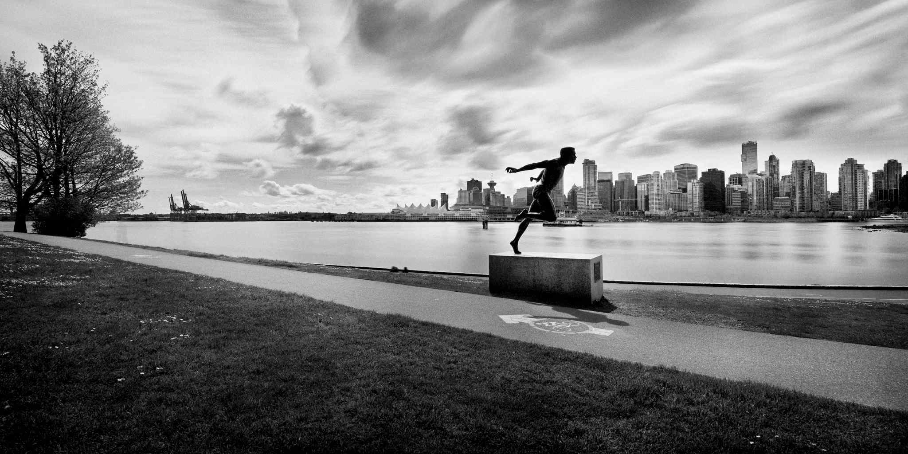

Stanley Park is recognized around the globe as one of the great parks of the world!
Vancouver's first park and one of the city's main tourist attractions, Stanley Park
is an evergreen oasis of 400 hectares (1,000 acres) close to the downtown core.
Its natural west coast atmosphere offering a back drop of majestic cedar, hemlock and
fir trees embraces visitors and transports them to an environment rich in tranquility.
The park abounds in wildlife and its features appeal to the naturalist, the plant lover or
one who would do nothing more than relax in beautiful surroundings. There is always something
happening in the park - check our Events Calendar for listings.